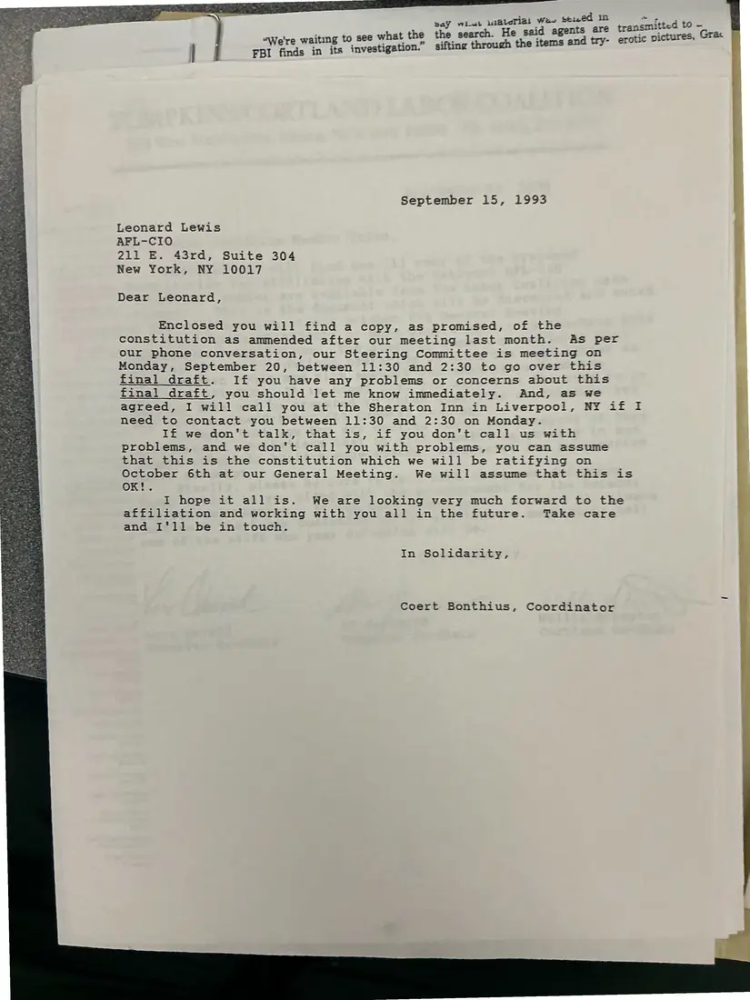

Letter, 1 page
Coert Bonthius to Leonard Lewis, on the revised constitution
September 15, 1993
The coordinator sends the AFL-CIO's Leonard Lewis the constitution as amended after their meeting and schedules a call before the Steering Committee meets.
Download or cite this itemPages


(open zoom view)Read the page text (machine-read, mostly readable)
This text was generated automatically from the photograph and has not been corrected. The image is the authoritative record.
g to see what the the search. He said agents are “We're waitin vestigation.” sifting through the items and try- | | FBI finds in i September 15, 1993 Leonard Lewis AFL-CIO 211 E. 43rd, Suite 304 New York, NY 10017 Dear Leonard, Enclosed you will find a copy, as promised, of the constitution as ammended after our meeting last month. As per our phone conversation, our Steering Committee is meeting on Monday, September 20, between 11:30 and 2:30 to go over this final draft. If you have any problems or concerns about this final draft, you should let me know immediately. And, as we agreed, I will call you at the Sheraton Inn in Liverpool, NY if I need to contact you between 11:30 and 2:30 on Monday. If we don’t talk, that is, if you don’t call us with problems, and we don't call you with problems, you can assume that this is the constitution which we will be ratifying on October 6th at our General Meeting. We will assume that this is I hope it all is. We are looking very much forward to the affiliation and working with you all in the future. Take care and I'll be in touch. In Solidarity, Coert Bonthius, Coordinator
See something wrong, or recognize a person or event? Send a correction. If you hold rights in this item or think it should not be public, write to the same address.